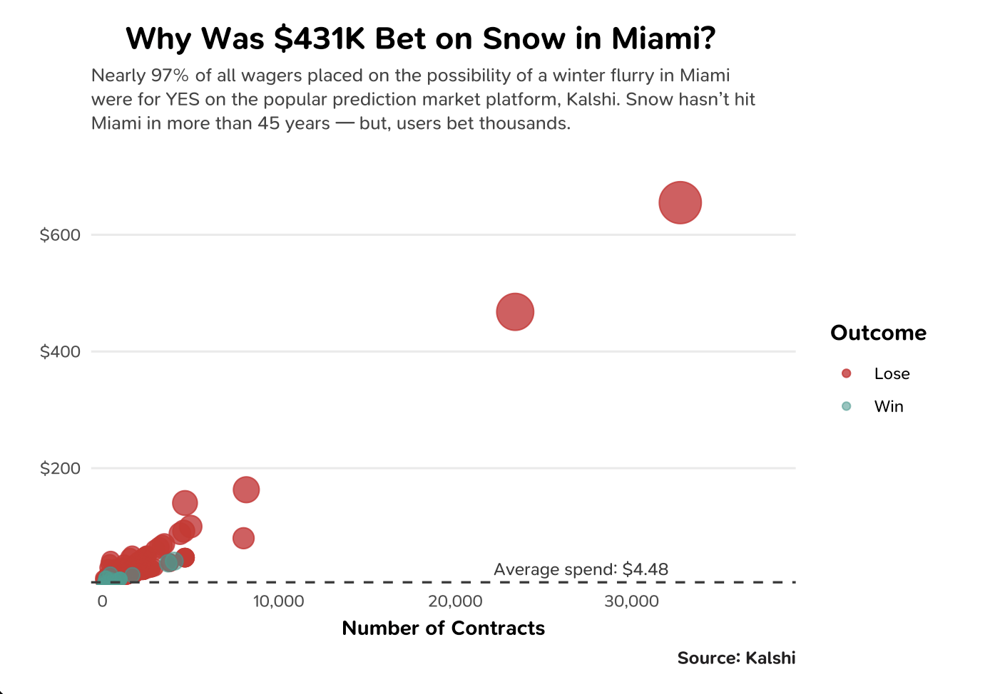
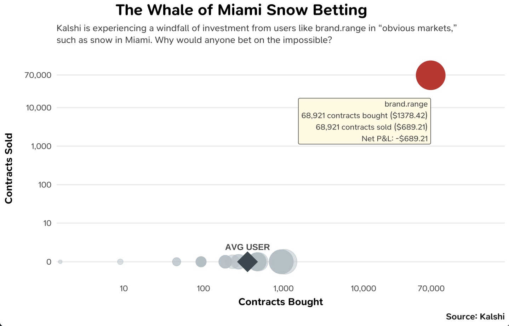

Betting On a Snowstorm in Miami Was Worth Nearly Half a Million
Kalshi is experiencing a windfall of betting on the mundane and even the obvious. Users are wagering on the likelihood of snow in Miami, which hasn't had snowfall since 1977.
Kalshi is experiencing a windfall of betting on the mundane and even the obvious. Users are wagering on the likelihood of snow in Miami, which hasn't had snowfall since 1977.


Prediction markets are now valued at about a trillion dollars in annual trading volume. Trading the weather has boomed; more than $430 million has been moved around various climate and weather markets on Kalshi alone. Many of these markets have clear winning wagers. For example, markets on Kalshi weighing the probability of snowfall in cities like Los Angeles and Salt Lake City (which haven't seen snow since 1962 and 1891), have trading volumes in the hundreds of thousands every month.
An analysis of the Miami snow market in January 2026 found that 62% of approximately 2,100 users made a single trade, most less than $5. Approximately 3% — about $333 total — was bet on the probability that Miami would not see snow, a winning bet. Only five users who picked the winning bet turned a profit.
Kalshi, the most popular prediction market for weather betting, flies just under the stringent regulatory oversight mandated for recognized gambling and betting operations. As a prediction market based on the sale of "contracts," Kalshi (and others, like Polymarket), have struggled to stay unencumbered by the rapidly evolving federal oversight. Regulation is tightening. Despite the pressure, Kalshi is booming.
When New York City was hit with a blizzard in late January, the associated prediction market became the largest climate-related market ever on Kalshi. According to Barron's, approximately $5.1 million was traded. The Miami snow market in January 2026 had a potential trading volume of $433k — though only $9,435 was actually moved into the market.
A user called "brand.range" opened his Kalshi account in January 2026. He bet big, wagering $1,378 on just about 69,000 contracts favorable to the event of at least 0.1 of an in (or more) of snowfall in Miami. brand.range quickly got cold feet, dumping a majority of his contracts at a major loss. If he won, he would have made nearly $69,000 on account of the 2% market probability.